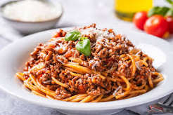

Back to Home
Spaghetti Bolognese Recipe

Description
Spaghetti Bolognese is a popular Italian dish made with spaghetti pasta and a rich tomato and minced meat sauce. It is cooked with onions, garlic and herbs to create a delicious flavour. Topped with grated cheese, this warm and comforting meal is perfect for lunch or dinner.
Ingredients:
- 250g Spaghetti
- 300g Minced Beef
- 1 Onion
- 2 Cloves of Garlic
- 400g Tomato Sauce
- 1 tsp Olive Oil
- Salt and Pepper
- Italian Herbs
- 200g Grated Parmesan Cheese
Instructions:
- Prepare the meat sauce: Fry the onion and garlic in olive oil. Add minced beef and cook until brown. Add tomato sauce, salt, pepper and herbs. Simmer for 15 minutes.
- Cook the spaghetti: Bring a large pot of salted water to a boil. Add spaghetti and cook according to package instructions until al dente.
- Combine: Drain the spaghetti and add it to the meat sauce. Toss to coat.
- Serve: Plate the spaghetti bolognese and sprinkle with Parmesan cheese. Enjoy! 🍝